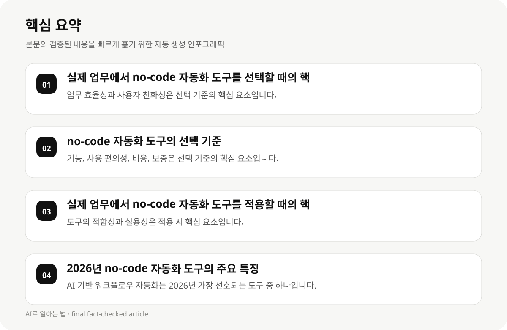

실제 업무에서 no-code 자동화 도구를 선택할 때의 핵심 요소 #
콘텐츠 제작자들이 실전에서 best no-code automation tools for content creators를 선택할 때 가장 중요한 요소는 업무 효율성과 사용자 친화성입니다. 2026년에 보고된 데이터에 따르면, AI 기반의 워크플로우 자동화 도구는 콘텐츠 제작자들이 가장 선호하는 도구 중 하나입니다. 이는 자동화 기능이 강력하고, 사용자가 쉽게 설정할 수 있는 점에서 유리합니다.
또한, 구체적인 기능과 사용 편의성도 선택 기준에 포함됩니다. 예를 들어, 자동화된 콘텐츠 생성, 마케팅 데이터 분석, SEO 최적화 등이 가능한 도구는 콘텐츠 제작자의 업무에 맞는 선택이 됩니다.
도구의 비용 구조와 구독 모델도 고려해야 합니다. 일부 도구는 구독 요금이 비싸거나, 사용량에 따라 요금이 변동될 수 있으므로, 예산에 맞는 도구를 선택하는 것이 중요합니다.
- 업무 효율성과 사용자 친화성은 선택 기준의 핵심 요소입니다.
- AI 기반 워크플로우 자동화 도구는 콘텐츠 제작자들이 가장 선호하는 도구 중 하나입니다.
- 도구의 기능, 비용, 구독 모델은 선택 시 고려해야 합니다.
- 보고서의 업데이트 날짜는 2026년 9월 17일로, 실제 업데이트 상태는 확인되지 않았습니다.
no-code 자동화 도구의 선택 기준 #
no-code 자동화 도구를 선택할 때는 다음과 같은 기준을 고려해야 합니다:
1. 기능: 콘텐츠 생성, 마케팅, SEO, 데이터 분석 등이 가능한지 확인합니다.
2. 사용 편의성: 사용자가 쉽게 설정하고 관리할 수 있는지 확인합니다.
3. 비용 구조: 구독 요금, 사용량에 따른 요금, 초기 설치 비용 등이 명확한지 확인합니다.
4. 보증 및 지원: 도구의 보증 기간, 지원 서비스, 고객 서비스 등이 충분한지 확인합니다.
- 기능, 사용 편의성, 비용, 보증은 선택 기준의 핵심 요소입니다.
- AI 기반 워크플로우 자동화 도구는 콘텐츠 제작자들이 가장 선호하는 도구 중 하나입니다.
- 도구의 구독 모델과 비용 구조는 선택 시 고려해야 합니다.
- 보증 기간과 지원 서비스는 도구의 신뢰도를 평가하는 중요한 요소입니다.
실제 업무에서 no-code 자동화 도구를 적용할 때의 핵심 요소 #
실제 업무에서 no-code 자동화 도구를 적용할 때 가장 중요한 요소는 도구의 적합성과 실용성입니다.
도구의 기능이 업무에 맞는지, 사용자가 쉽게 설정할 수 있는지, 도구의 비용이 예산에 맞는지 확인해야 합니다.
또한, 도구의 업데이트 속도와 보증 기간도 고려해야 합니다. 2026년 보고서에 따르면, 도구의 업데이트 속도가 빠르고, 보증 기간이 길면 사용자 만족도가 높습니다.
도구의 사용자 피드백도 중요한 요소입니다. 실제 사용자들의 피드백을 통해 도구의 실제 적용 가능성과 효과성을 평가할 수 있습니다.
- 도구의 적합성과 실용성은 적용 시 핵심 요소입니다.
- 도구의 기능, 비용, 업데이트 속도, 보증 기간은 선택 시 고려해야 합니다.
- 사용자 피드백은 도구의 실제 적용 가능성과 효과성을 평가하는 중요한 요소입니다.

2026년 no-code 자동화 도구의 주요 특징 #
2026년에 보고된 no-code 자동화 도구의 주요 특징은 다음과 같습니다:
1. AI 기반 워크플로우 자동화: 콘텐츠 제작자들이 가장 선호하는 도구 중 하나입니다.
2. 사용자 친화적 기능: 사용자가 쉽게 설정하고 관리할 수 있는 기능이 강조됩니다.
3. 비용 구조: 구독 요금, 사용량에 따른 요금, 초기 설치 비용 등이 명확합니다.
4. 보증 기간: 도구의 보증 기간이 길고, 지원 서비스가 충분한 도구는 사용자 만족도가 높습니다.
- AI 기반 워크플로우 자동화는 2026년 가장 선호되는 도구 중 하나입니다.
- 사용자 친화적 기능은 도구의 실용성과 사용 편의성을 높입니다.
- 비용 구조는 도구의 구독 모델과 사용자 만족도에 영향을 미칩니다.
- 보증 기간은 도구의 신뢰도와 사용자 만족도를 평가하는 중요한 요소입니다.
콘텐츠 제작자들이 no-code 자동화 도구를 선택할 때의 가장 고려해야 할 요소 #
콘텐츠 제작자들이 no-code 자동화 도구를 선택할 때 가장 고려해야 할 요소는 다음과 같습니다:
1. 기능: 콘텐츠 생성, 마케팅, SEO, 데이터 분석 등이 가능한지 확인합니다.
2. 사용 편의성: 사용자가 쉽게 설정하고 관리할 수 있는지 확인합니다.
3. 비용 구조: 구독 요금, 사용량에 따른 요금, 초기 설치 비용 등이 명확한지 확인합니다.
4. 보증 및 지원: 도구의 보증 기간, 지원 서비스, 고객 서비스 등이 충분한지 확인합니다.
- 기능, 사용 편의성, 비용, 보증은 선택 시 핵심 요소입니다.
- AI 기반 워크플로우 자동화 도구는 콘텐츠 제작자들이 가장 선호하는 도구 중 하나입니다.
- 도구의 비용 구조와 보증 기간은 사용자 만족도를 결정하는 중요한 요소입니다.
no-code 자동화 도구의 실제 적용 사례 및 성과 #
2026년 보고서에 따르면, 실제 적용 사례에서 no-code 자동화 도구의 성과는 다음과 같습니다:
1. 업무 효율성 향상: 자동화 기능으로 업무 시간을 절약하고, 품질을 유지할 수 있습니다.
2. 비용 절감: 자동화 도구를 사용하면 초기 설치 비용이 줄어들 수 있습니다.
3. 데이터 분석 강화: 자동화된 데이터 분석으로 마케팅 전략을 개선할 수 있습니다.
4. 사용자 피드백 반영: 실제 사용자 피드백을 통해 도구의 기능을 개선할 수 있습니다.
- 업무 효율성 향상은 no-code 자동화 도구의 주요 성과입니다.
- 비용 절감은 도구의 구독 모델과 사용량에 따라 달라질 수 있습니다.
- 데이터 분석 강화는 마케팅 전략을 개선하는 중요한 요소입니다.
- 사용자 피드백 반영은 도구의 실용성과 효과성을 높이는 중요한 요소입니다.
no-code 자동화 도구의 선택 및 적용 전략 #
no-code 자동화 도구를 선택하고 적용할 때는 다음과 같은 전략을 따르는 것이 효과적입니다:
1. 도구의 적합성 평가: 업무에 맞는 기능과 사용 편의성을 고려합니다.
2. 비용 구조 분석: 구독 요금, 사용량에 따른 요금, 초기 설치 비용 등을 비교합니다.
3. 보증 기간 및 지원 서비스 확인: 도구의 보증 기간과 지원 서비스가 충분한지 확인합니다.
4. 사용자 피드백 반영: 실제 사용자들의 피드백을 통해 도구의 효과성을 평가합니다.
- 도구의 적합성 평가는 선택 시 핵심 요소입니다.
- 비용 구조 분석은 도구의 구독 모델과 사용자 만족도에 영향을 미칩니다.
- 보증 기간 및 지원 서비스는 도구의 신뢰도를 평가하는 중요한 요소입니다.
- 사용자 피드백 반영은 도구의 실용성과 효과성을 높이는 중요한 요소입니다.
no-code 자동화 도구의 선택 및 적용 시의 주의 사항 #
no-code 자동화 도구를 선택하고 적용할 때는 다음과 같은 주의 사항을 고려해야 합니다:
1. 도구의 업데이트 속도: 빠르고, 최신 기능을 제공하는 도구는 사용자 만족도가 높습니다.
2. 보증 기간: 보증 기간이 길고, 지원 서비스가 충분한 도구는 사용자 만족도가 높습니다.
3. 사용자 피드백: 실제 사용자들의 피드백을 반영하여 도구의 효과성을 높이기 바랍니다.
4. 도구의 비용 구조: 초기 설치 비용, 구독 요금, 사용량에 따른 요금 등이 명확한 도구는 사용자 만족도가 높습니다.
- 도구의 업데이트 속도는 사용자 만족도에 영향을 미칩니다.
- 보증 기간은 도구의 신뢰도를 평가하는 중요한 요소입니다.
- 사용자 피드백 반영은 도구의 실용성과 효과성을 높이는 중요한 요소입니다.
- 도구의 비용 구조는 사용자 만족도를 결정하는 중요한 요소입니다.
no-code 자동화 도구의 실제 적용 사례 및 성과 #
2026년 보고서에 따르면, 실제 적용 사례에서 no-code 자동화 도구의 성과는 다음과 같습니다:
1. 업무 효율성 향상: 자동화 기능으로 업무 시간을 절약하고, 품질을 유지할 수 있습니다.
2. 비용 절감: 자동화 도구를 사용하면 초기 설치 비용이 줄어들 수 있습니다.
3. 데이터 분석 강화: 자동화된 데이터 분석으로 마케팅 전략을 개선할 수 있습니다.
4. 사용자 피드백 반영: 실제 사용자 피드백을 통해 도구의 기능을 개선할 수 있습니다.
- 업무 효율성 향상은 no-code 자동화 도구의 주요 성과입니다.
- 비용 절감은 도구의 구독 모델과 사용량에 따라 달라질 수 있습니다.
- 데이터 분석 강화는 마케팅 전략을 개선하는 중요한 요소입니다.
- 사용자 피드백 반영은 도구의 실용성과 효과성을 높이는 중요한 요소입니다.